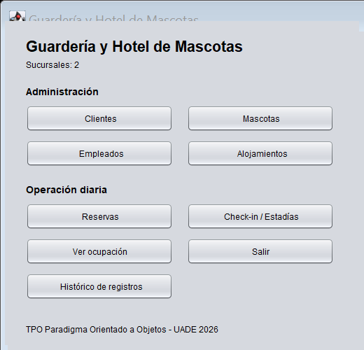
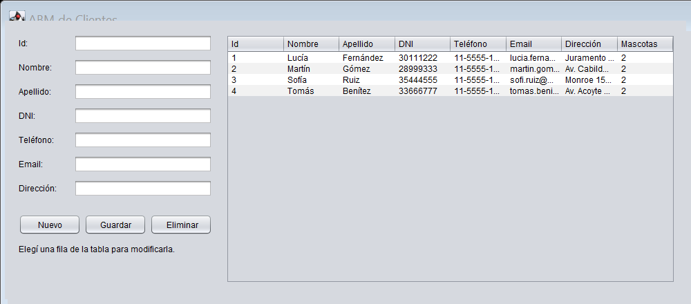
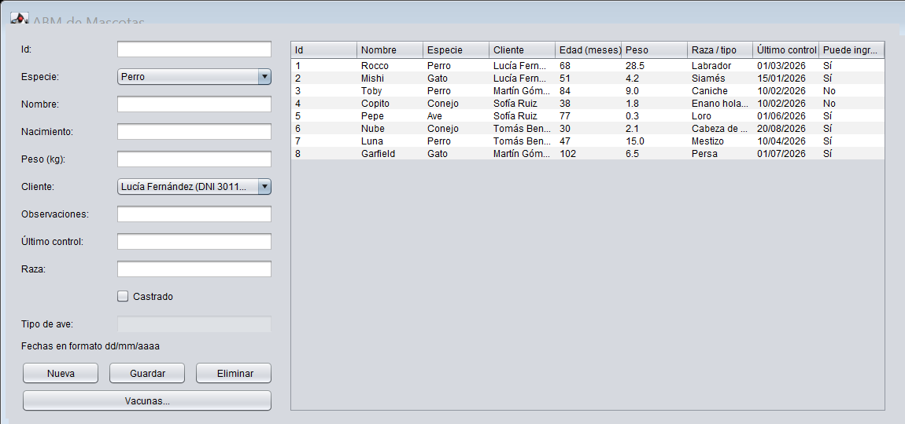
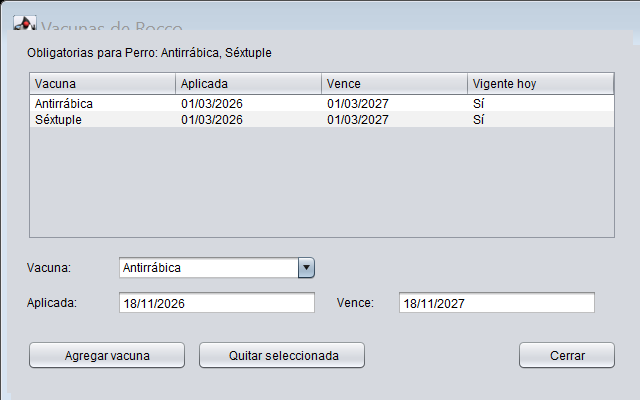
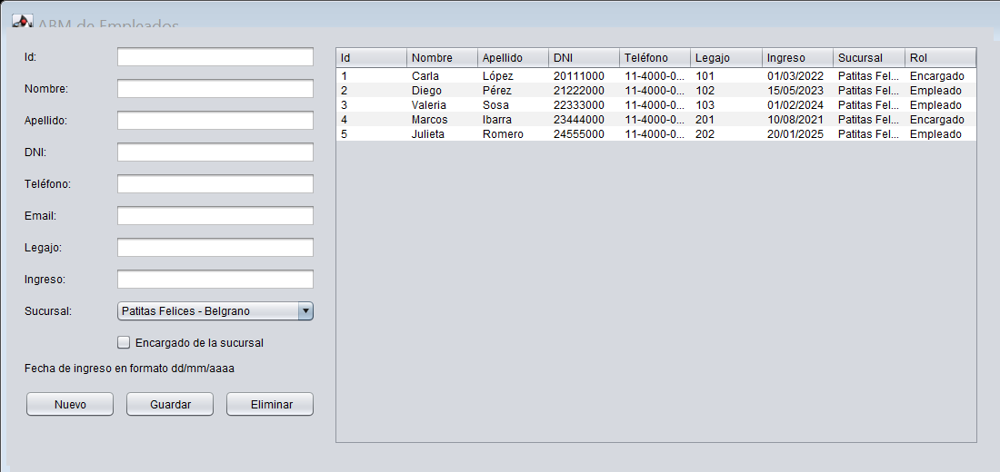
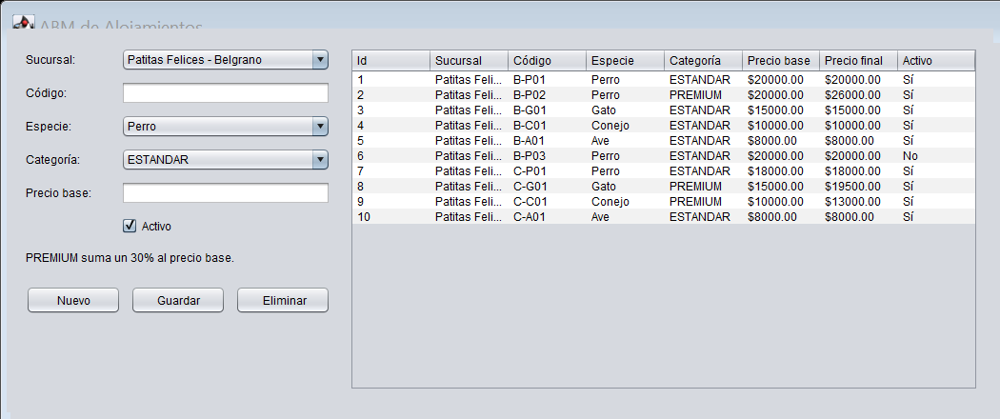
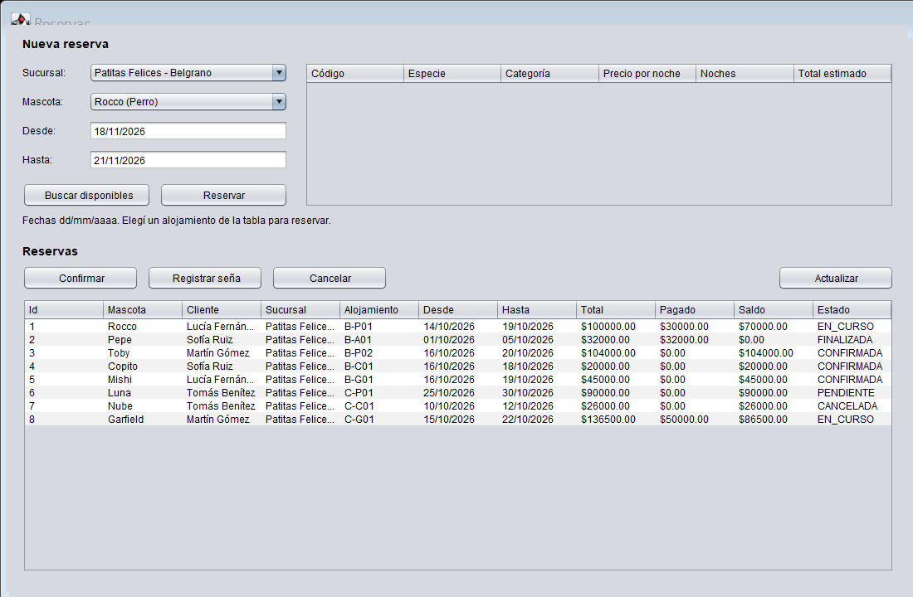
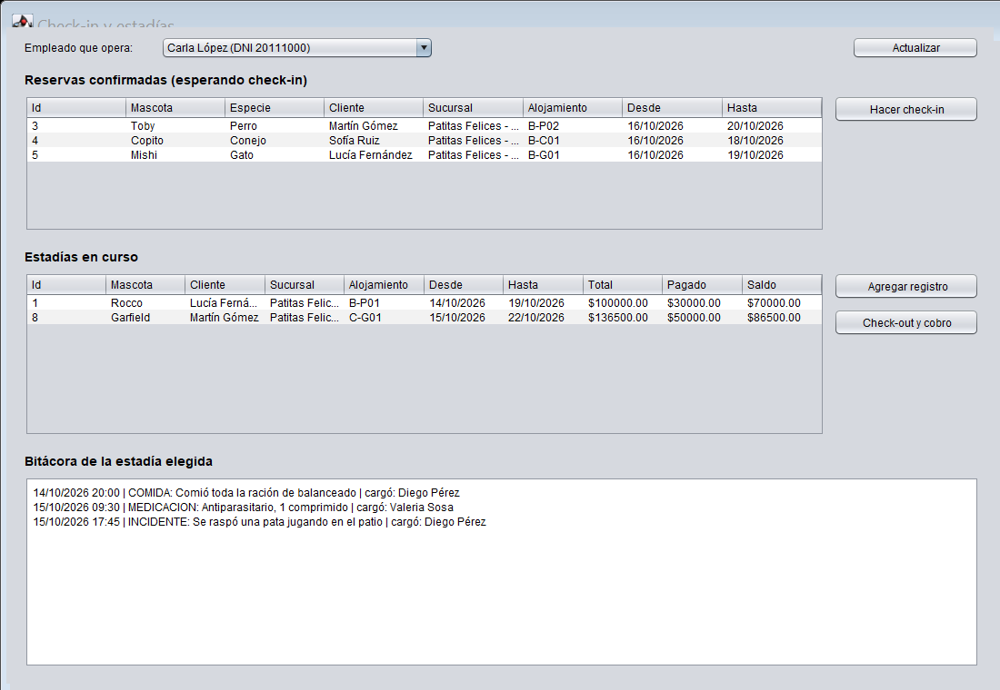
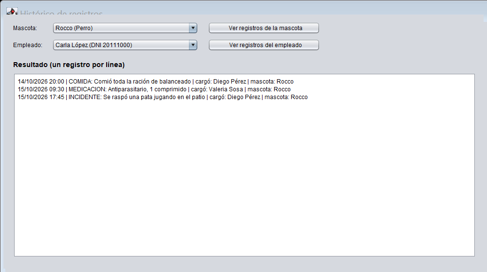

Guardería y Hotel de Mascotas
Manual de uso del sistema. Explica para qué sirve cada pantalla y qué se puede hacer en cada una.
Qué es este sistema
Es el programa que usa la guardería para llevar todo lo que pasa con las mascotas: los clientes y sus animales, los empleados, los alojamientos (cuchas, jaulas, cuartos), las reservas, el ingreso y la salida de cada mascota, los pagos y lo que pasa durante la estadía.
Todo lo que se carga queda guardado solo. No hace falta apretar ningún botón para "guardar el sistema" al salir.
Menú principal
Es la pantalla que aparece al abrir el programa. Desde acá se abre cada parte del sistema.

| Botón | Para qué sirve |
|---|---|
| Clientes | Cargar y mantener los datos de las personas que dejan sus mascotas. |
| Mascotas | Cargar los animales, con su dueño y sus vacunas. |
| Empleados | Cargar el personal y elegir quién es el encargado de cada sucursal. |
| Alojamientos | Cargar las cuchas, jaulas y cuartos, con su tipo y su precio. |
| Reservas | Buscar lugar libre para una mascota en una fecha y reservarlo. |
| Check-in / Estadías | Recibir a la mascota, anotar lo que pasa durante la estadía y cobrar la salida. |
| Ver ocupación | Ver cuántos alojamientos están ocupados en cada sucursal, por tipo de animal. |
| Histórico de registros | Buscar qué se anotó para una mascota o qué cargó un empleado. |
| Salir | Cierra el programa (pide confirmación). |
1. Clientes

Qué se puede hacer
- Agregar un cliente: apretar Nuevo, completar los datos y apretar Guardar.
- Cambiar los datos de un cliente: elegir su fila en la tabla, corregir lo que haga falta y apretar Guardar.
- Eliminar un cliente: elegir la fila y apretar Eliminar.
2. Mascotas

Qué se puede hacer
- Agregar una mascota: apretar Nueva, elegir la especie y el dueño, completar nombre, fecha de nacimiento y peso, y apretar Guardar.
- Cambiar los datos de una mascota: elegir su fila, corregir y apretar Guardar.
- Cargar o quitar vacunas: elegir la mascota y apretar Vacunas... (ver más abajo).
- Eliminar una mascota: elegir la fila y apretar Eliminar. No se puede si la mascota tiene reservas.
Las vacunas

Desde esta ventana se cargan las vacunas de la mascota: el nombre, la fecha en que se aplicó y la fecha de vencimiento. Para quitar una, elegirla en la lista y apretar Quitar seleccionada.
- Perros: antirrábica y séxtuple, vigentes (no vencidas).
- Gatos: antirrábica y triple felina, vigentes.
- Conejos: no tienen vacunas obligatorias, pero necesitan un control veterinario de los últimos 180 días.
- Aves: no tienen vacunas obligatorias, pero necesitan un control veterinario de los últimos 365 días.
3. Empleados

Qué se puede hacer
- Agregar un empleado: apretar Nuevo, completar sus datos, elegir la sucursal y la fecha de ingreso (dd/mm/aaaa) y apretar Guardar.
- Marcarlo como encargado de su sucursal con la casilla correspondiente. El encargado es a quien se avisa cuando pasa algo importante con una mascota.
- Cambiar los datos o eliminar un empleado, eligiendo su fila primero.
4. Alojamientos

Qué se puede hacer
- Agregar un alojamiento: apretar Nuevo, elegir la sucursal, el código (por ejemplo B-P01), el tipo de animal, la categoría y el precio por noche, y apretar Guardar.
- Cambiar los datos de un alojamiento: elegir su fila, corregir y apretar Guardar.
- Eliminar un alojamiento: elegir la fila y apretar Eliminar.
Para tener en cuenta: no se puede cambiar el tipo de animal de un alojamiento que ya tiene reservas, ni eliminar uno que las tiene. Un alojamiento que no está activo no se ofrece para nuevas reservas.
5. Reservas

Acá se reserva un lugar para una mascota en unas fechas, y se sigue cada reserva hasta que la mascota se va.
Cómo hacer una reserva
- Elegir la sucursal y la mascota.
- Escribir la fecha de entrada y la de salida, en formato dd/mm/aaaa.
- Apretar Buscar disponibles. Aparecen los alojamientos libres para esa mascota en esas fechas.
- Elegir uno de la lista y apretar Reservar. La reserva queda pendiente.
Qué se puede hacer con una reserva ya cargada
- Confirmar: la reserva pasa a confirmada. Así queda lista para el check-in.
- Registrar seña: se anota un pago parcial (monto y medio de pago). Sirve para pendientes y confirmadas.
- Cancelar: la reserva queda cancelada y el alojamiento vuelve a estar libre para esas fechas.
- Actualizar: vuelve a cargar la lista de reservas.
6. Check-in / Estadías

Es la pantalla que se usa en el día a día, con la mascota presente. Tiene tres partes:
- Arriba, "Reservas confirmadas": las mascotas que esperan entrar.
- Al medio, "Estadías en curso": las mascotas que están alojadas ahora, con lo cobrado y lo que falta pagar.
- Abajo, "Bitácora": lo que se anotó durante la estadía de la mascota elegida.
Arriba a la izquierda se elige el empleado que opera. Su nombre queda registrado en todo lo que se haga desde esa pantalla.
Hacer el check-in (ingreso de la mascota)
- Elegir la reserva en la lista de confirmadas.
- Apretar Hacer check-in.
Si la mascota cumple con las vacunas o controles que pide su especie, pasa a estar en curso. Si no, aparece un cartel con lo que le falta.
Agregar un registro durante la estadía
- Elegir la mascota en "Estadías en curso".
- Apretar Agregar registro, elegir el tipo y escribir la descripción.
Los tipos que existen hoy son Comida, Medicación e Incidente. Cuando el tipo es Incidente, el sistema avisa al cliente y al encargado de la sucursal.
Hacer el check-out y cobrar
- Elegir la mascota en "Estadías en curso".
- Apretar Check-out y cobro.
- Si queda saldo pendiente, el sistema pide el medio de pago (efectivo, débito, crédito o transferencia) para cobrarlo.
- Confirmar la salida. Aparece el comprobante con el resumen de la estadía.
7. Histórico de registros

Sirve para buscar lo que se anotó en la bitácora, en cualquier estadía. Es útil cuando alguien pregunta "¿quién se ocupó de mi mascota?" o "¿qué hizo este empleado?".
Cómo se usa
- Ver registros de la mascota: elegir la mascota en el primer desplegable y apretar el botón. Aparecen todos sus registros, de todas sus estadías, con quién los cargó.
- Ver registros del empleado: elegir el empleado en el segundo desplegable y apretar el botón. Aparecen todos los registros que cargó, con el nombre de la mascota de cada uno.
Las líneas aparecen en el orden en que se cargaron dentro de cada estadía, estadía por estadía.
8. Ver ocupación
Desde el menú principal, el botón Ver ocupación muestra, para cada sucursal, cuántos alojamientos están ocupados y cuántos hay en total, separados por tipo de animal (por ejemplo, Perro: 2/5 significa 2 ocupados de 5). Se cuentan las mascotas que están alojadas en ese momento.
Flujo típico de una mascota
| Paso | Dónde | Qué pasa |
|---|---|---|
| 1 | Clientes y Mascotas | Se carga el dueño y la mascota, con sus vacunas. |
| 2 | Reservas | Se busca un alojamiento libre y se reserva (queda pendiente). |
| 3 | Reservas | Se confirma la reserva y, si el cliente deja seña, se registra. |
| 4 | Check-in / Estadías | Llega la mascota: se hace el check-in y pasa a estadía en curso. |
| 5 | Check-in / Estadías | Durante la estadía se anotan comidas, medicación o incidentes. |
| 6 | Check-in / Estadías | Al retirarla: check-out y cobro del saldo. Se entrega el comprobante. |
| 7 | Histórico de registros | Si hace falta, se consulta quién hizo qué con la mascota. |
Glosario
| Término | Qué significa |
|---|---|
| Reserva | Lugar reservado para una mascota en unas fechas. |
| Seña | Pago parcial que el cliente deja al reservar. |
| Check-in | Ingreso de la mascota a la guardería. |
| Check-out | Salida de la mascota, con el cobro del saldo. |
| Bitácora | Registro de lo que pasa durante la estadía (comidas, medicación, incidentes). |
| Encargado | Empleado responsable de una sucursal. Recibe los avisos de incidentes. |
| Alojamiento | Cucha, jaula o cuarto donde se aloja la mascota. |
Mensajes que puede mostrar el sistema
Cuando algo no se puede hacer, el sistema muestra un cartel explicando el motivo, por ejemplo:
- "Ya existe un cliente con ese DNI." → el dato repetido no se puede guardar.
- "No se puede borrar… porque tiene reservas." → primero hay que cancelar o cerrar las reservas.
- "Falta o venció la vacuna…" → la mascota no puede hacer el check-in hasta tener la vacuna al día.
- "Primero elegí una fila de la tabla." → hay que seleccionar un registro antes de apretar el botón.
TPO Paradigma Orientado a Objetos - UADE 2026 · Grupo 4